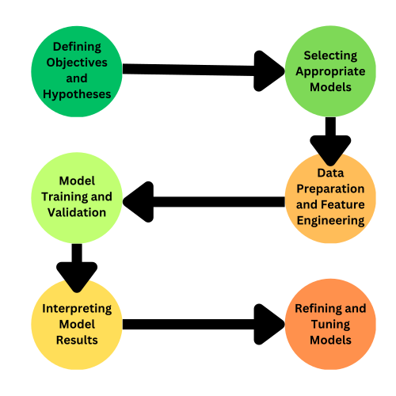

Modeling for educational researchers builds on insights from Exploratory Data Analysis (EDA) to develop predictive or explanatory models that guide decision-making and enhance learning outcomes.
This involves selecting appropriate models, preparing and transforming data, training and validating the models, and interpreting results. Effective modeling helps uncover key factors influencing educational success, allowing for targeted interventions and informed policy decisions.
Module Objectives
By the end of this module, learners will:
Understand the importance of modeling in the learning analytics workflow and how it helps quantify insights from data.
Create and interpret correlation matrices using the corrr package and create APA-formatted correlation tables using the apaTables package.
Fit and understand linear regression models to prepare for the case study.
Steps in the Modeling Process

The corrr Package
corrr allows you to run a correlation analysis between two variables.
#install corrr package if this is your first time#install.packages("corrr")# read in librarylibrary(corrr) #<<data_to_explore %>%select(proportion_earned, time_spent_hours) %>%correlate() #<<
# A tibble: 2 × 3
term proportion_earned time_spent_hours
<chr> <dbl> <dbl>
1 proportion_earned NA 0.438
2 time_spent_hours 0.438 NA
How can we interpret this?
Formatting corrr for APA
#install if this is your first timeinstall.packages("apaTables")# read in apatables librarylibrary(apaTables)data_to_explore_subset <- data_to_explore %>%select(time_spent_hours, proportion_earned, int)apa.cor.table(data_to_explore_subset)#<<
lm(dependent ~ independent, data = "your data name")
Create a linear regression with time_spent_hours as the independent variable and proportion_earned as the dependent variable
Save as a new object model1
Inspect the data using summary()
model1 <-lm(proportion_earned ~ time_spent_hours, data = data_to_explore)summary(model1)
Call:
lm(formula = proportion_earned ~ time_spent_hours, data = data_to_explore)
Residuals:
Min 1Q Median 3Q Max
-64.671 -7.841 5.427 15.419 33.743
Coefficients:
Estimate Std. Error t value Pr(>|t|)
(Intercept) 62.43061 1.51073 41.33 <2e-16 ***
time_spent_hours 0.47921 0.04025 11.91 <2e-16 ***
---
Signif. codes: 0 '***' 0.001 '**' 0.01 '*' 0.05 '.' 0.1 ' ' 1
Residual standard error: 22.21 on 596 degrees of freedom
(345 observations deleted due to missingness)
Multiple R-squared: 0.1921, Adjusted R-squared: 0.1908
F-statistic: 141.8 on 1 and 596 DF, p-value: < 2.2e-16
Create a ggplot viz for our model
Add + geom_smooth(method = "lm") after your geom_point
data_to_explore %>%ggplot(aes(x = time_spent_hours, y = proportion_earned, color = enrollment_status)) +geom_point() +# add geom_smooth for lmgeom_smooth(method ="lm")+labs(title="How Time Spent on Course LMS is Related to Points Earned in the Course", x="Time Spent (Hours)",y ="Proportion of Points Earned")